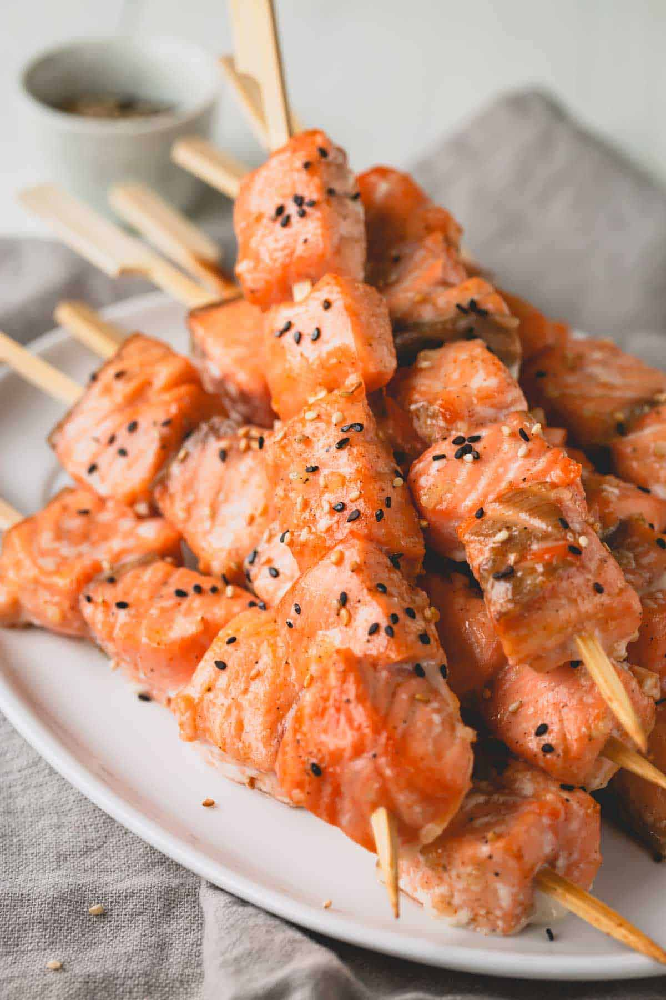
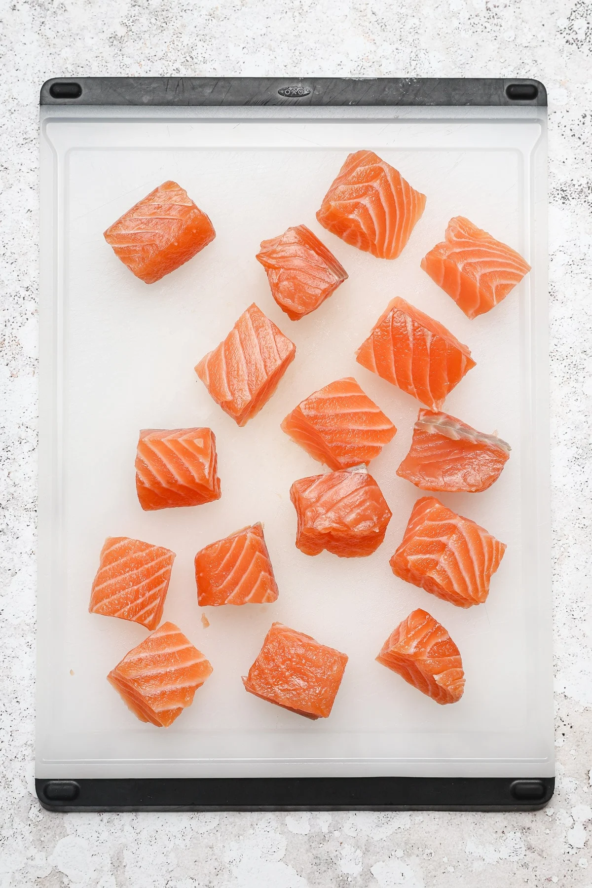
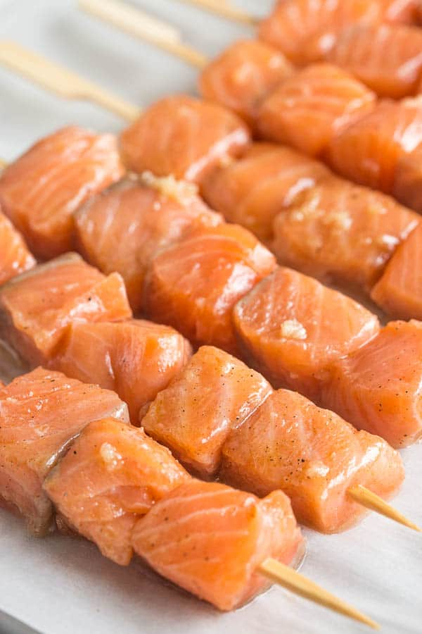
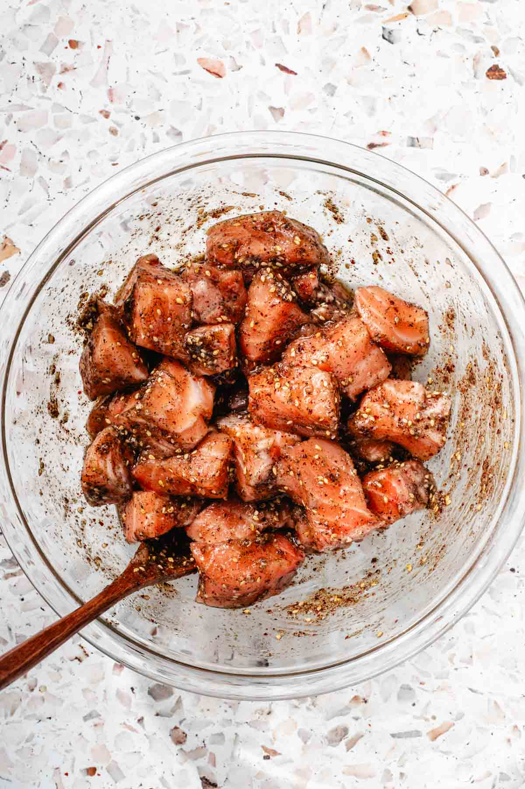
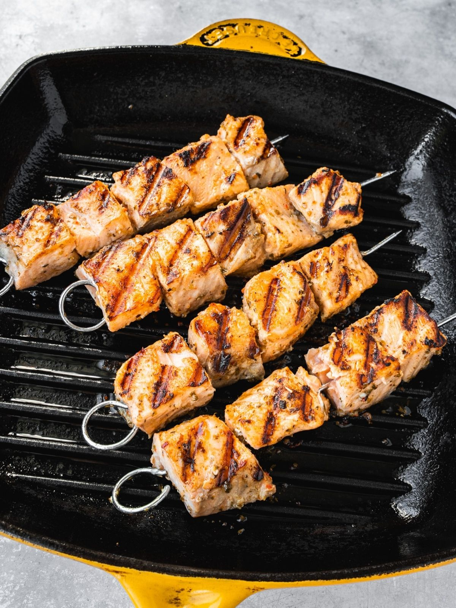
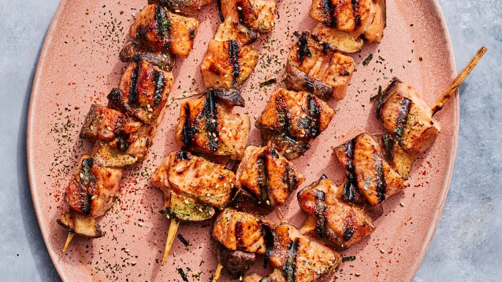

Level Easy | Cook 35 min | Total 6 hours 45 minutes | Serves 4

This rendition of kushiyaki — the catch-all term for the popular Japanese technique of grilling skewered foods — is a play on a surf and turf, combining salmon with earthy shiitake mushrooms, for a dose of umami. Here the fish is first marinated in a mirin, sake and miso mixture; the same mixture is also brushed on the skewers during cooking for a burnished glaze. Finish the skewers with a generous shake of furikake or shichimi togarashi, two popular Japanese seasonings.
No skewers or grill? Cut the salmon and mushrooms into bite-sized pieces and cook them in a frying pan instead.
Fish: salmon. Soy: miso is typically made from soybeans. Wheat/gluten: may be present in miso or soy-based seasonings.

Salmon and shiitake threaded together on a skewer.

Everything for the marinade and skewers, laid out before cooking.

The reserved marinade goes on near the end for a burnished finish.

Garnished with furikake or shichimi togarashi and ready to serve.

Salmon kushiyaki skewers, hot off the grill.
Serve hot, right after grilling. Refrigerate leftovers in an airtight container for up to 3 days, and reheat gently in a skillet or microwave until warmed through.